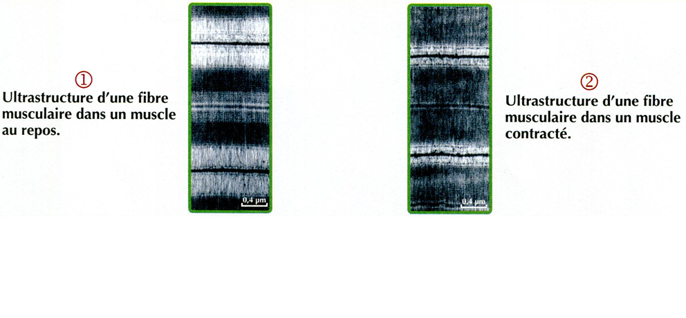
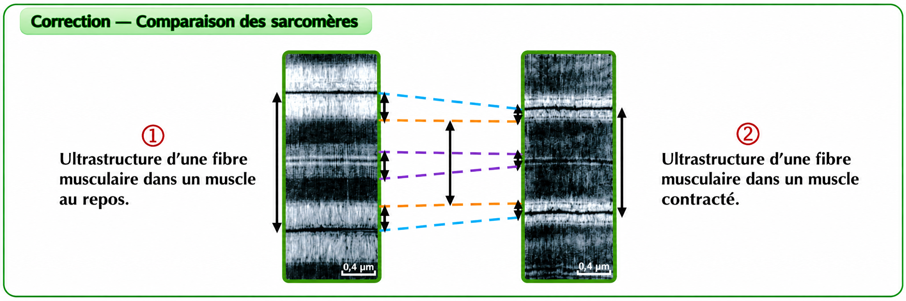
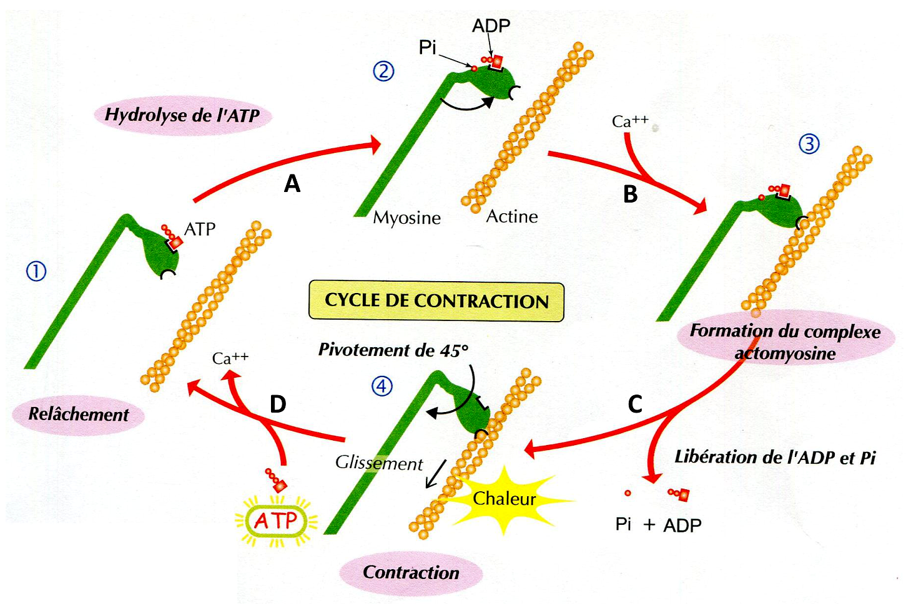

Activité 4 — Mécanisme de la contraction musculaire
Objectif : comprendre les modifications du sarcomère au cours de la contraction et expliquer le mécanisme moléculaire du glissement des myofilaments.
1. Modifications du sarcomère au cours de la contraction
Document 1 — Observation de deux sarcomères

Comparaison de l'ultrastructure d'un sarcomère dans un muscle au repos et dans un muscle contracté.
Lors de la contraction, le sarcomère se raccourcit. La bande claire I et la zone H diminuent, tandis que la longueur de la bande sombre A reste constante.
Ces observations s'expliquent par le glissement des filaments d'actine par rapport aux filaments de myosine, vers le centre du sarcomère.

2. Mécanisme moléculaire de la contraction
Document 2 — Cycle moléculaire de la contraction

Schéma du cours présentant les étapes A, B, C et D du fonctionnement des ponts actine-myosine.
3. Synthèse — De l'excitation à la contraction
Excitation de la fibre musculaire → libération de Ca²⁺ par le réticulum sarcoplasmique → fixation du Ca²⁺ sur la troponine → déplacement de la tropomyosine → formation des ponts actine-myosine → basculement des têtes de myosine → glissement des filaments d'actine → raccourcissement du sarcomère.
La fixation d'un nouvel ATP permet le détachement de la myosine. Lorsque l'excitation cesse, le Ca²⁺ est repompé vers le réticulum sarcoplasmique, ce qui permet le relâchement.